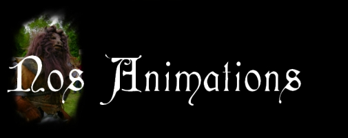

 Contes des Brumes est une structure alliant les talents et la passion du monde associatif avec les enjeux des projets professionnels et permettant ainsi l'organisation d'évènements privés ou ouverts au public dans le domaine des Arts de l'Imaginaire à un niveau semi-professionnel. Théâtre, Jeux et Fictions sont les passions que nous mettons au service des structures notamment touristiques afin de vous proposer et de vous aider à donner vie à toutes sortes de projets créatifs.
Nous vous proposons 4 types d'évènements qui sont personnalisables, modulables et combinables et destinés à s'adapter aux spécificités de vos domaines et vos projets (Evènement saisonnier, Mariages, Week-end entre amis, animations pour enfants, fête communale, etc...). Nous mettons l'accent sur la personnalisation des projets pour s'accorder à l'histoire du patrimoine que nous animons grâce à nos talents issus de divers horizons, à un niveau très familial.
1) Rallye d'énigmes : Ici, le public doit résoudre des énigmes et épreuves pour progresser le long d'une histoire à découvrir. Ces animations peuvent varier en durée et en espace. (Escape Game, chasse au trésor, rallyes touristiques...)
2) Parcours spectacle : Le public découvre un spectacle le plus souvent interactif au travers de saynètes réparties dans le domaine. Cette animation implique nécessairement des acteurs.
3) Jeu de Rôle Grandeur Nature : Dans ces animations, les participants incarnent des rôles -plus ou moins élaborés- et participent donc à faire avancer le scénario et l'histoire. Il peut s'agir de soirées enquêtes, par exemple, dans laquelle le public peut faire partie des suspects, ou simplement jouer des détectives.
4) Festival ludique fantastique : Ces évènements consistent avant tout à convoquer le maximum de talents amateurs et professionnels pour exposer les talents divers tout en proposant des animations diverses et variées sur la durée de l'évènement.
Les animations peuvent être combinées, par exemple un rallye dans lequel les participants sont par équipes ayant chacune leur propre personnalité et doivent faire le tour du domaine pour résoudre des énigmes tout en assistant à des saynètes ou encore un escape game, une malette "jeu de piste"...
En termes de tarifs, nous préférons partager les gains des évènements afin de pouvoir proposer des événements avec un budget taillé sur mesure, mais nos objectifs sont en priorité de défrayer les intervenants, que cela permette l'entretien des lieux de jeu et permettre la mise en place d'animations au tarif le plus juste pour tout le monde.
Lorsqu'il n'y a pas de billeterie prévue, nous vous proposons un devis sur mesure pour votre événement, en gardant à l'esprit que notre collaboration avec le milieu associatif nous permet de vous obtenir des tarifs très intéressants.
ANIMATIONS POUR ENFANTS, JEUNES ET INITIATION AU JEU DE ROLE GRANDEUR NATURE
Nous pouvons réaliser différentes actions ou journées d'animations à destination des plus ou moins jeunes autour du Jeu de Rôle Grandeur Nature. Professionnels de l'Education Nationale, nous ajoutons toujours une portée éducative, pédagogique et inductive à nos évènements ludiques.
AUTRES PROJETS
Contes Des Brumes est également une structure d'autres projets liés aux arts de l'Imaginaire et de l'Expression, n'hésitez pas à nous contacter pour toute demande relative à ces sujets !